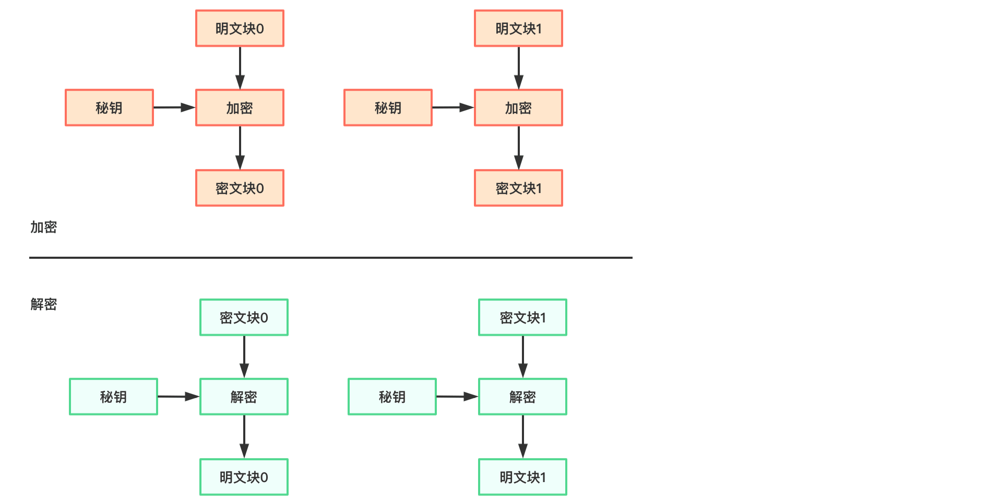
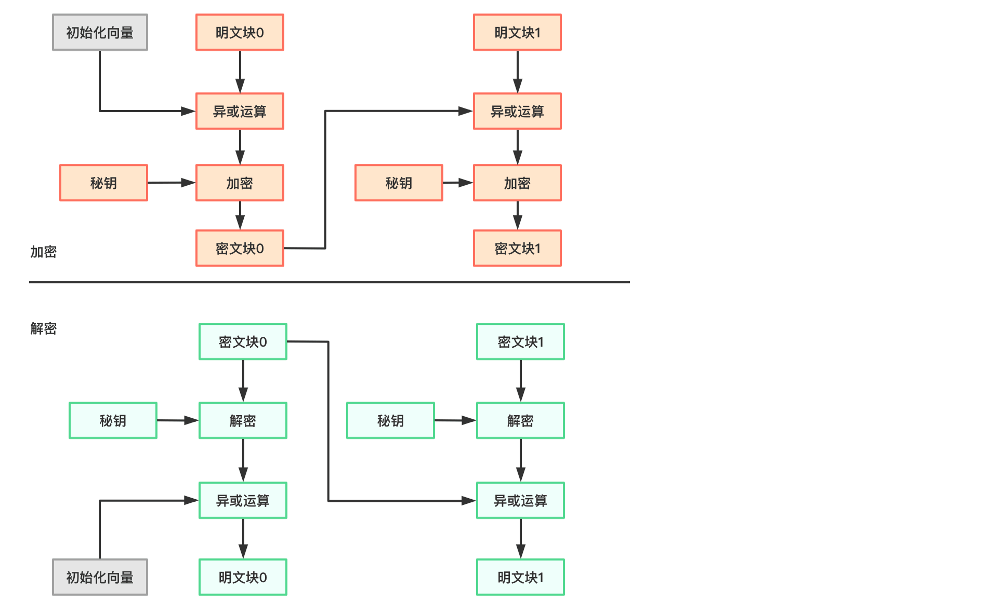
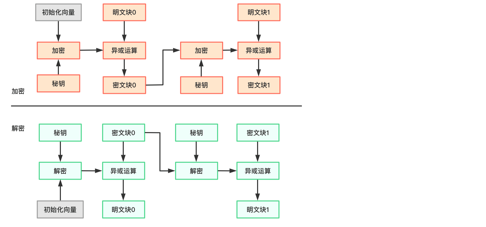
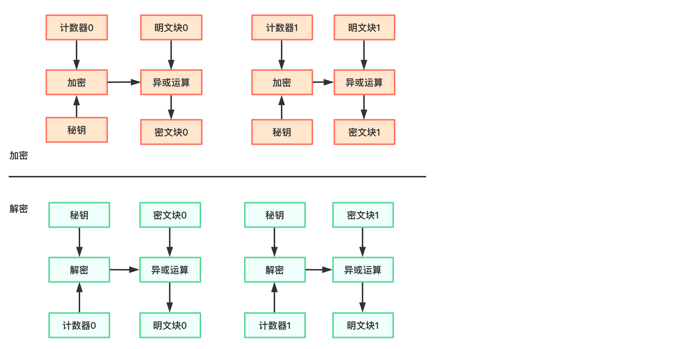

对称加密算法加密和解密使用的是同一份秘钥，解密是加密的逆运算。对称加密算法加密速度快，密文可逆，一旦秘钥文件泄露，就会导致原始数据暴露。对称加密的结果一般使用Base64算法编码，便于阅读和传输。JDK8支持的对称加密算法主要有DES、DESede、AES、Blowfish，以及RC2和RC4等。不同的算法秘钥长度不同，秘钥长度越长，加密安全性越高。
DES
DES（Data Encryption Standard，数据加密标准）算法是对称加密算法领域中的典型算法，DES算法秘钥较短，以现在计算机的计算能力，DES算法加密的数据在24小时内可能被破解。所以DES算法已经被淘汰，建议使用AES算法，不过这里还是简单了解下。
JDK8仅支持56位长度的DES秘钥，下面举个JDK8实现DES加密的例子：
1 | import org.junit.Test; |
上面步骤看着挺多，其实可以总结为如下几步：
生成加密秘钥；
1.1. 通过KeyGenerator生成一个指定位数的秘钥；
1.2. 通过上面生成的秘钥实例化算法对应的秘钥材料KeySpec；
1.3. 使用秘钥材料通过秘钥工厂SecretKeyFactory生成算法秘钥SecretKey。
通过转换模式实例化Cipher；
指定Cipher模式和秘钥，进行加解密操作。
运行结果如下：
1 | 待加密值：mrbird's blog |
如果在生成秘钥的时候，不指定为56位，则会抛出java.security.InvalidParameterException: Wrong keysize: must be equal to 56异常。
DESede
作为DES算法的一种改良，DESede算法（也成为3DES，三重DES）针对其秘钥长度偏短和迭代次数偏少等问题做了相应改进，提高了安全强度，但同时也造成处理速度较慢、秘钥计算时间加长、加密效率不高的问题。所以这里还是简单了解下，实际还是推荐用AES。
JDK8支持112位或168位长度的DESede秘钥，下面举个JDK8实现DESede加密的例子：
1 | import org.junit.Test; |
过程和DES一致，区别仅在于使用的加密算法为DESede，秘钥长度指定为112，秘钥材料对象为DESedeKeySpec类。
上面程序输出如下：
1 | 待加密值：mrbird's blog |
如果指定不合法的秘钥长度，程序将抛出java.security.InvalidParameterException: Wrong keysize: must be equal to 112 or 168异常。
AES
AES（AdvancedEncryption Standard，高级数据加密标准）算法支持128位、192位和256位的秘钥长度，加密速度比DES和DESede都快，至今还没有被破解的报道。经过验证，目前采用的AES算法能够有效抵御已知的针对DES算法的所有攻击方法，如部分差分攻击、相关秘钥攻击等。AES算法因秘钥建立时间短、灵敏性好、内存需求低等优点，在各个领域得到广泛的研究与应用。
JDK8支持128位、192位和256位长度的AES秘钥，下面举个JDK8实现AES加密的例子：
1 | import org.junit.Test; |
过程和上面例子大体一致，唯一区别是使用AES算法无需指定特定类型的秘钥材料，直接用SecretKeySpec对象即可。
程序输出如下：
1 | 待加密值：mrbird's blog |
如果指定不合法的秘钥长度，程序将抛出java.security.InvalidParameterException: Wrong keysize: must be equal to 128, 192 or 256异常。
RC2、RC4
RC2和RC4算法也可以用于替换DES算法，特点是秘钥长度较为灵活，RC2和RC4的秘钥长度范围为40到1024位。
JDK8支持RC2和RC4算法：
1 | import org.junit.Test; |
程序输出如下：
1 | 待加密值：mrbird's blog |
如果指定不合法的秘钥长度，程序将抛出java.security.InvalidParameterException: Key length for RC2 must be between 40 and 1024 bits异常。
RC4读者可以自己玩一玩。
Blowfish
Blowfish算法也可以用于替换DES，Blowfish算法的秘钥长度范围为32到448位，并且必须为8的倍数。
JDK8支持Blowfish算法：
1 | import org.junit.Test; |
程序运行结果：
1 | 待加密值：mrbird's blog |
如果指定不合法的秘钥长度，程序将抛出java.security.InvalidParameterException: Keysize must be multiple of 8, and can only range from 32 to 448 (inclusive)异常。
PBE
PBE（Password Based Encryption，基于口令加密）算法是一种基于口令的加密算法，特点是没有秘钥的概念，信息交互双方事先拟定好口令即可。单纯的口令很容易通过穷举攻击方式破译，所以PBE也加入了“盐”的概念。
PBE算法是对称加密算法的综合性算法，常见算法如PBEWithMD5AndDES，该算法使用了MD5和DES算法构建PBE算法。JDK8支持PBEWithMD5AndDES、PBEWithMD5AndTripleDES、PBEWithSHA1AndDESede、PBEWithSHA1AndRC2_40、PBEWithSHA1AndRC2_128、PBEWithSHA1AndRC4_40、PBEWithSHA1AndRC4_128、PBEWithHmacSHA1AndAES_128、PBEWithHmacSHA224AndAES_128、PBEWithHmacSHA256AndAES_128、PBEWithHmacSHA384AndAES_128、PBEWithHmacSHA512AndAES_128、PBEWithHmacSHA1AndAES_256、PBEWithHmacSHA224AndAES_256、PBEWithHmacSHA256AndAES_256、PBEWithHmacSHA384AndAES_256和PBEWithHmacSHA512AndAES_256，其中算法名称中包含Hmac的需要配和初始化向量使用。
不需要指定初始化向量的PBE算法族（PBEWithMD5AndDES、PBEWithMD5AndTripleDES、PBEWithSHA1AndDESede、PBEWithSHA1AndRC2_40、PBEWithSHA1AndRC2_128、PBEWithSHA1AndRC4_40、PBEWithSHA1AndRC4_128）例子：
1 |
|
程序输出如下：
1 | 待加密值：mrbird's blog |
算法名称包含Hmac的PBE算法需要指定初始化向量，比如PBEWithHmacSHA1AndAES_128：
1 | import org.junit.Test; |
通过IvParameterSpec类创建初始化向量，创建初始化向量的秘钥必须为16字节，这里为123456789abcdefg，实例化PBE参数材料的时候通过构造参数传入初始化向量。
程序输出如下：
1 | 待加密值：mrbird's blog |
加密模式
对称加密算法分为：序列密码(流密码)加密，分组密码(块密码)加密两种。流密码是对信息流中的每一个元素（一个字母或一个比特）作为基本的处理单元进行加密，块密码是先对信息流分块，再对每一块分别加密。
上面介绍的这些都属于块密码加密。不同的算法侧重点不同，有的强调效率，有的强调安全，有的强调容错性。根据数据加密时每个加密区块间的关联方式来区分，可以分为4种加密模式：电子密码本模式（Electronic Code Book，ECB）、密文链接模式（Cipher Book Chaining，CBC）、密文反馈模式（Cipher Feed Back，CFB）、输出反馈模式（Output Feed Back，OFB）。AES标准除了推荐上述4种工作模式外，还推荐了一种新的工作模式—计数器模式（Counter，CTR）。这些工作模式可适用于各种分组密码算法。
ECB
ECB模式加解密过程如下图所示：

明文分为若干块，每次加密均产生独立的密文分组，每组的加密结果不会对其他分组产生影响，相同的明文加密后对应产生相同的密文。
- 优点：可并行操作，没有误差传递（因为每个密文都是独立加密来的）；
- 缺点：如果明文重复，则对应的密文也会重复，对明文进行主动攻击的可能性较高；
- 用途：适合加密秘钥、随机数等短数据。例如，安全地传递DES秘钥，ECB是最合适的模式。
CBC
CBC模式加解密过程如下图所示：

明文分为若干块，每次加密前，明文块都和前一个明文块加密后的内容进行异或处理，然后再用秘钥加密。因为第一个明文块没有可以用来异或处理的密文块，所以我们需要提供一个初始化向量来替代。
- 优点：密文链接模式加密后的密文上下文关联，对明文的主动攻击的可能性较低；
- 缺点：不能并行加密，如果在加密过程中发生错误，则错误将被无限放大，导致加密失败。并且需要提供初始化向量；
- 用途：可加密任意长度的数据；适用于计算产生检测数据完整性的消息认证码Mac。
CFB
CFB模式加解密过程如下图所示：

明文分为若干块，每次加密前，先将前一个密文块使用秘钥加密，加密结果和当前明文块异或处理得到密文块。同样的，需要为第一个明文块加密提供初始化向量。
- 优点：和CBC类似；
- 缺点：和CBC类似；
- 用途：因错误传播无界，可用于检查发现明文密文的篡改。
OFB
OFB模式加解密过程如下图所示：

过程和CFB类似，区别在于OFB第一次使用秘钥对初始化向量进行加密（结果为A），加密结果和明文块异或处理得到密文块，下一次操作时候，不是使用秘钥加密前一个密文块，而是使用秘钥加密A的结果再和明文块异或处理，得到当前密文块。
- 优点：和CFB类似；
- 缺点：不利于并行计算；对明文的主动攻击是可能的，安全性较CFB差；
- 用途：适用于加密冗余性较大的数据，比如语音和图像数据。
CTR
CTR模式加解密过程如下图所示：

CTR含义是计数器模式，所以它维护了一个递增的计数器。秘钥加密计数器，结果和明文块异或得到密文块，依次类推。
- 优点：可以并行操作，安全性和CBC一样好；
- 缺点：没有错误传播，因此不易确保数据完整性；
- 用途：适用于各种加密应用。
填充模式
当需要按块处理的数据, 数据长度不符合块处理需求时, 按照一定的方法填充满块长的规则。如果不填充，待加密的数据块长度不符合要求时程序会抛出异常。
JDK8中主要支持NoPadding和PKCS5Padding填充模式。
- NoPadding：不填充；
- PKCS5Padding：数据块的大小为8位, 不够就补足。
加密、填充模式实战
在了解了加密模式和填充模式后，我们回头看前面代码中的transformation参数，实例化Cipher对象的时候需要指定transformation转换模式，转换模式主要有两种格式：
- 算法；
- 算法/加密模式/填充模式。
下面就AES算法来实践不同的加密、填充模式。
当转换模式为AES/ECB/PKCS5Padding时：
1 | import org.junit.Test; |
程序运行解果：
1 | 待加密值：mrbird's blog |
将转换模式改为AES/CBC/PKCS5Padding时，程序输出抛出java.security.InvalidKeyException: Parameters missing异常。
因为该模式需要指定初始化向量，将代码修改为：
1 | import org.junit.Test; |
程序输出如下：
1 | 待加密值：mrbird's blog |
将转换模式改为AES/CBC/NoPadding时，程序抛出javax.crypto.IllegalBlockSizeException: Input length not multiple of 16 bytes异常。因为mrbird’s blog不是16字节的倍数。
更多对称加密算法和加密模式填充模式的组合可以自己尝试下，或者参考下面的算法总结。
手动指定秘钥
在使用对称加密算法加解密的时候，秘钥一般是双方事先约定好的，假如现在有AES秘钥/a3nqjFFtkWNmeX5HzmMtzCziOThbAnEHoiTA4JquAI=，AES密文y9YMlnX7TE4qF0dDIQ==，转换模式为AES/CTR/PKCS5Padding，初始化向量秘钥为123456789abcdefg，如何通过秘钥和密文进行解密呢，可以参考下面的代码（即演示如何手动指定秘钥并解密）：
1 | import org.junit.Test; |
输出如下：
1 | AES解密结果：mrbird's blog |
算法总结
对上面这些算法进行总结：
| 算法 | 秘钥长度（位） | 工作模式 | 填充模式 | 初始化向量秘钥长度（字节） |
|---|---|---|---|---|
| DES | 56 | ECB、CBC、CFB、OFB、CTR等 | NoPadding、 PKCS5Padding、 ISO10126Padding | 8 |
| DESede | 112、168 | ECB、CBC、CFB、OFB、CTR等 | NoPadding、 PKCS5Padding、 ISO10126Padding | 8 |
| AES | 128、192、256 | ECB、CBC、CFB、OFB、CTR等 | NoPadding、 PKCS5Padding、 ISO10126Padding | 16 |
| RC2 | 40~1024 | ECB、CBC、CFB、OFB、CTR等 | NoPadding、 PKCS5Padding、 ISO10126Padding | 8 |
| RC4 | 40~1024 | ECB | NoPadding | 无 |
| Blowfish | 32~448，8的倍数 | ECB、CBC、CFB、OFB、CTR等 | NoPadding、 PKCS5Padding、 ISO10126Padding | 8 |
| PBE | 无 | CBC | PKCS5Padding | 16（带Hmac） |
《Java加密与解密的艺术》读书笔记